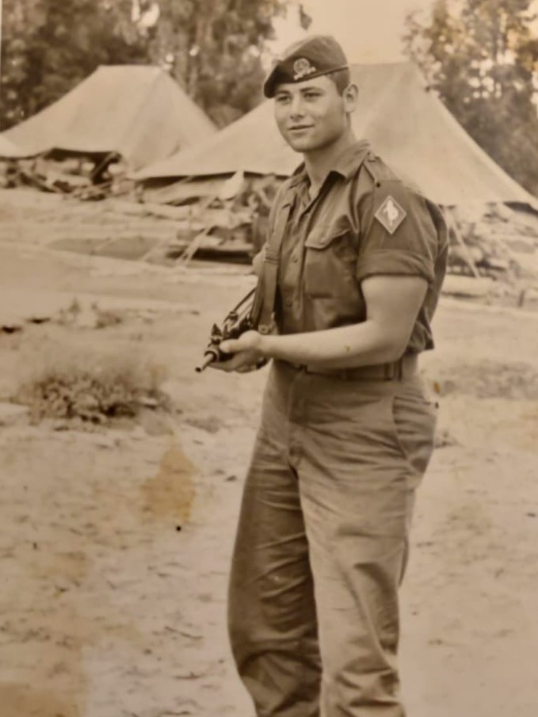
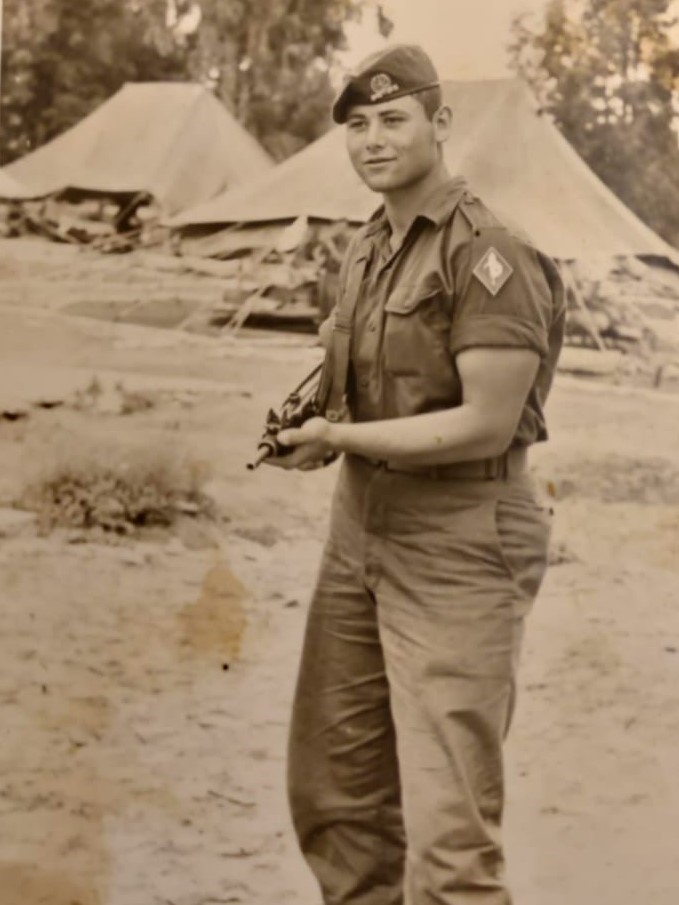
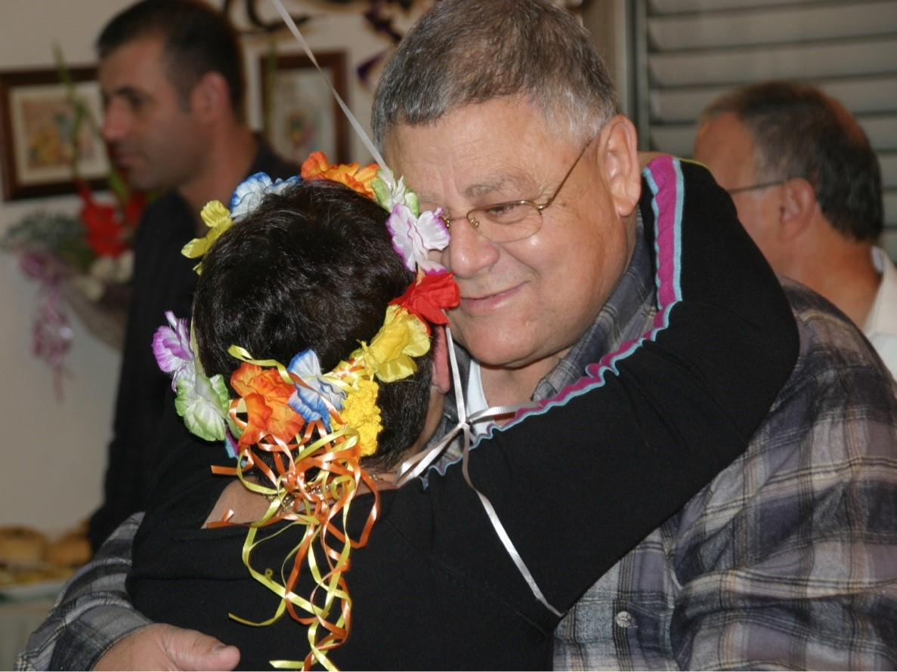
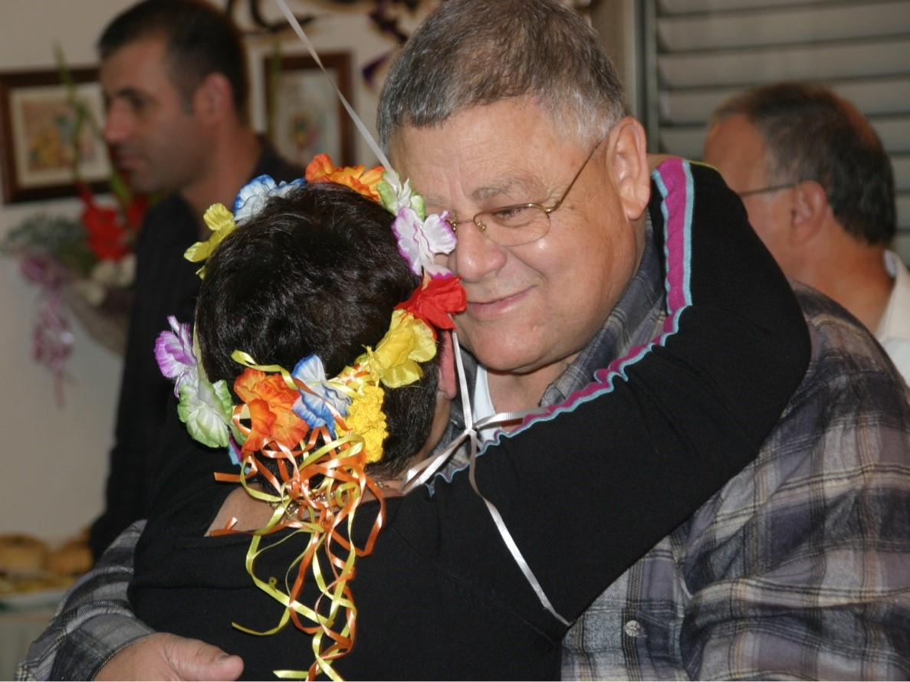
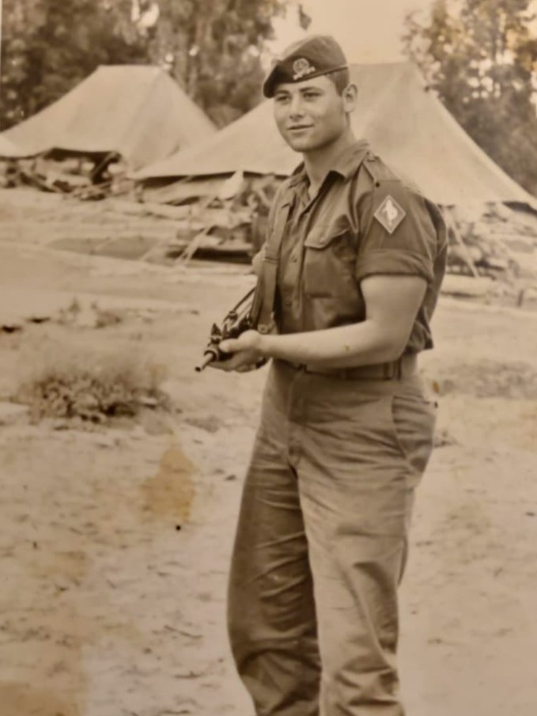
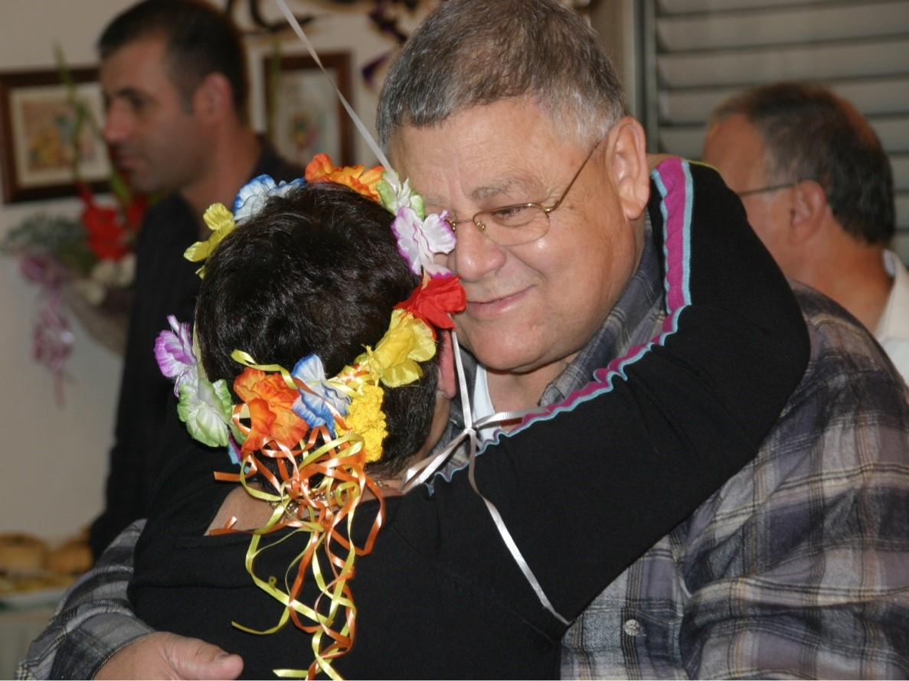

Some Memories...

 



 



His Favorite Music
Like
❤️ Likes: 0
QR Code

Scan the QR code to access the website.
סרקו את הקוד כדי לבקר באתר
ans
contact me
האתר הזה הוא אתר זיכרון לכבוד סבא שלי. הוא היה אדם מיוחד ויוצא דופן שהותיר חותם אצל כל אדם שפגש בחייו.
דרך האתר הזה אני רוצה לשמר את זכרו, לשתף את סיפור חייו, את התמונות שלו ואת המוזיקה שאהב וגם לתת לכם מקום לשתף את הזיכרונות והחוויות שלכם איתו.
אני מקווה שהאתר הזה יוכל לשמש כזיכרון חי עבור כל מי שהכיר אותו.
סבא שלי, יצחק ג'ין (פסח), נולד בתאריך 26.09.1944 בעיירה טירה שבטורקיה להוריו יוסף ורוזה פסח והיה אחד משישה אחים ואחיות- שלום, תמר, חיים, אברהם וליה.
מקור שם משפחתו "פסח" הוא בעיירה גוודלחרה שבספרד שבה חיה ושפחתו ובה הודפסה הגדת הפסח הראשונה בהיסטוריה בשנת 1482.
בשנת 1492 החל גירוש ספרד ומשפחתו עברה להתגורר בטורקיה. בזמן מלחמת העולם השנייה, הגרמנים ביקשו מהשלטונות הטורקים לרכז את כל היהודים בכדי לשלוח אותם למחנות ריכוז.
הטורקים, שרצו להגן על היהודים, אמרו לגרמנים כי אין יהודים במדינתם, ובן לילה שינו לכל היהודים את שמותיהם לשמות טורקיים.
כך קיבלה משפחתו את השם "ג'ין" שמשמעותו "פינת חמד בגן עדן".
בשנת 1960 כשהיה בן 16 בלבד, עלה לארץ ישראל לבדו דרך עליית הנוער וגר בקיבוץ הגושרים שבצפון. הוא תמיד סיפר שעלה לארץ כי תמיד הרגיש מחובר מאוד לציונות.
בקיבוץ הוא עבד כחקלאי ונהג טרקטור ואף לתקופה קצרה עבד כרפתן. לאחר מכן, הוא התגייס לצה"ל ושירת כלוחם בחטיבת הצנחנים.
היה חשוב לו להתגייס לצה"ל למרות שאחיו הבכור נפצע קשה במלחמת "מבצע סיני" ונפטר מפצעיו.
לאחר מלחמת ששת הימים, הוא חווה משבר קשה ונסע לבקר את משפחתו בטורקיה במטרה לחזור לגור עם הוריו, אך החיים החברתיים שלו בטורקיה היו שונים מאוד מהחברה שכל-כך אהב בקיבוץ בישראל ולכן החליט לחזור ולהמשיך לבנות את חייו בארץ.
הוא עבר להתגורר ביפו והתחיל לעבוד בחברת "אגד" כמתקן תקרים ובהמשך, מאחר שאהב את העבודה, פתח פנצ'רייה משלו.
את סבתא שלי, אביבה, הכיר דרך חבר שעבד איתו ב"אגד". הם נפגשו לראשונה בבית קפה בבת ים וזאת הייתה אהבה ממבט ראשון! לאחר שבועיים בלבד כבר אמר לה שהוא רוצה להתחתן איתה ואכן, תקופה קצרה לאחר מכן, בשנת 1968, הם התחתנו ונולדו להם שתי בנות- שושנית ורונית.
סבא שלי היה האדם המיוחד ביותר שהכרתי בחיי- איש משפחה מסור ואוהב, בעל לב רחב ונתינה אין קץ, שתמיד רואה את הטוב בכל אחד, בשלן ממעלה ראשונה, איש שיחה מרתק, בעל חכמת חיים שהיה יודע תמיד להגיד את המילה הנכונה והמשפטים שאמר ולימד אותנו מלווים אותנו עד עצם היום הזה.


Scan the QR code to access the website.
סרקו את הקוד כדי לבקר באתר